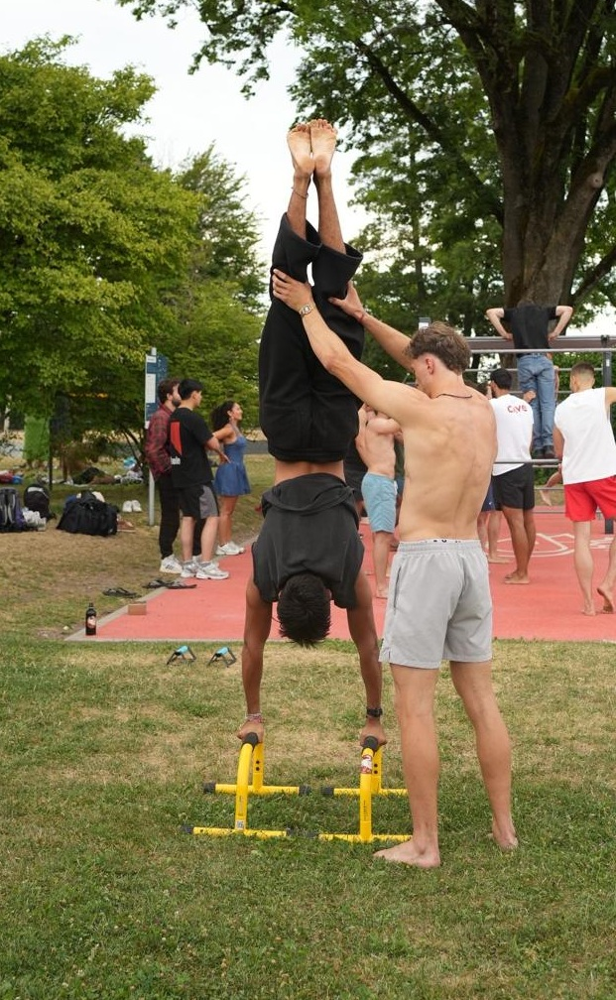

Der freie Handstand ist der Inbegriff von perfekter Körperbeherrschung und Balance. Er sieht verdammt elegant aus, erfordert aber ein Zusammenspiel aus Schulterkraft, Core-Stabilität und vor allem Überwindung. Viele scheitern nicht an der Kraft, sondern an der mentalen Blockade – der Angst, nach hinten umzukippen. Mit diesen strukturierten Vorübungen nimmst du der Vertikalen den Schrecken!
"Balance ist keine Frage von Glück, sondern das Ergebnis von aktiver Kontrolle und Fokus."
Um die nötige Stabilität und das richtige Gefühl für das Überkopfstehen aufzubauen, solltest du diese Schritte nacheinander meistern:
Schritt 1: Kraftaufbau für die Schultern (Pike Push-Ups)
Bevor du dich hochdrückst, müssen deine Schultern dein gesamtes Körpergewicht tragen können. Starte im normalen Liegestütz, wandere mit den Füßen nah an die Hände heran und schiebe dein Gesäß in den Himmel (wie ein umgedrehtes V). Beuge nun die Arme, sodass deine Stirn kontrolliert den Boden vor deinen Händen berührt, und drücke dich explosiv wieder nach oben aus den Schultern heraus.
Schritt 2: Die Angst besiegen (Wall Walk / Chest-to-Wall)
Um die vertikale Position ohne Sturzgefahr kennenzulernen, nutzen wir eine Wand. Platziere deine Füße an der Wand und wandere mit den Händen rückwärts an die Wand heran, während deine Füße nach oben wandern. Das Ziel ist es, mit der Brust so nah wie möglich an der Wand zu stehen. **Wichtig:** Schaue nicht auf den Boden, sondern drücke deine Schultern aktiv nach oben und spanne den Po fest an!

Schritt 3: Das richtige Abrollen lernen (The Bail-Out)
Die Angst vorm Umkippen verschwindet erst, wenn du weißt, wie du dich sicher rettest. Übe an der Wand das seitliche Ausdrehen: Wenn du das Gleichgewicht verlierst, versetzt du einfach eine Hand ein Stück nach vorne und landest elegant seitlich auf den Füßen. Sobald dieser Rettungsmechanismus im Muskelgedächtnis sitzt, verliert das Umfallen seinen Schrecken.
Schritt 4: Die Balance aus den Fingern (Kick-Ups & Korrektur)
Wenn du dich frei in den Handstand kickst, balancierst du primär über deine Hände. Greife den Boden wie eine Kralle! Wenn du nach vorne (über)kippst, drückst du deine Fingerspitzen fest in den Boden. Wenn du zurückfällst, verlagerst du das Gewicht auf den Handballen. Versuche, dich aus der Wandposition immer wieder für ein paar Sekunden mit den Zehen wegzudrücken, um dieses Spiel der Balance zu spüren.
Fazit: Geduld ist dein bester Trainingspartner
Der Handstand ist ein Skill, der nicht über Nacht kommt. Er erfordert kurze, aber regelmäßige Sessions (am besten 10–15 Minuten vor jedem Haupttraining). Bleib fokussiert, kontrolliere deine Körperspannung und feiere jede Sekunde, die du länger frei stehst!